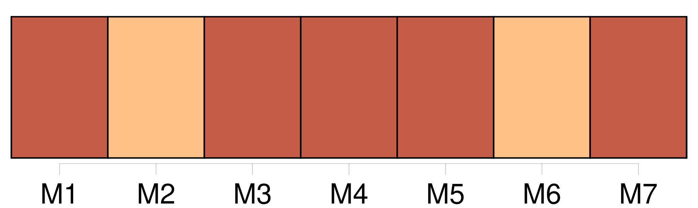
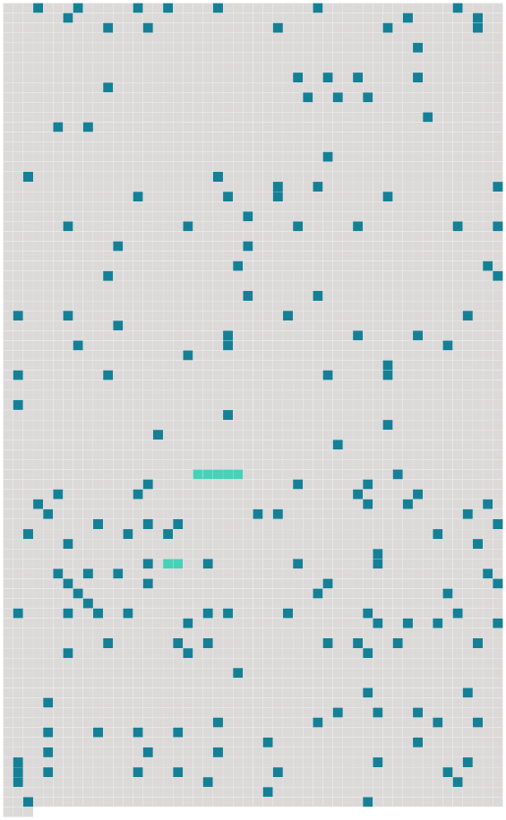

Longueur nb maillons : 178 mentions |
 |
MADEMOISELLE FIFI
Tu riais beaucoup, d'avance, de [mes] tendresses noires, comme tu disais ; et, tu [me] voyais déjà revenir suivi d'une grande femme en ébène, coiffée d'un foulard jaune, et ballottante en des vêtements éclatants.
Le tour des Mauricaudes viendra sans doute, car [j'] en ai vu déjà plusieurs qui [m'] ont donné quelque envie de me tremper en cette encre ; mais [je] suis tombé pour [mon] début sur quelque chose de mieux et de singulièrement original. Tu [m'] as écrit, dans ta dernière lettre : « Quand [je] sais comment on aime dans un pays, [je] connais ce pays à le décrire, bien que ne l'ayant jamais vu. [3 phrases] [Je] ne sais si ce que vous appelez l'amour du coeur, l'amour des âmes, si l'idéalisme sentimental, le platonisme enfin, peut exister sous ce ciel ; j'en doute même. [2 phrases] Mais [j'] arrive à [mon] histoire. [Je] ne te dis rien de [mes] premiers temps de séjour en Algérie. Après avoir visité Bône, Constantine, Biskra et Sétif, [je] suis venu à Bougie par les gorges du Chabet, et une incomparable route au milieu des forêts kabyles, qui suit la mer en la dominant de deux cents mètres, et serpente selon les testons delà haute montagne, jusqu'à ce merveilleux golfe de Bougie aussi beau que celui de Naples, que celui d'Ajaccio et que celui de Douarnenez, les plus admirables que [je] connaisse.
[J'] excepte dans [ma] comparaison cette invraisemblable baie de Porto, ceinte de granit rouge, et habitée par les fantastiques et sanglants géants de pierre qu'on appelle les « Calanche » de Piana, sur les côtes Ouest de la Corse. [3 phrases] Dès que [j'] eus mis le pied dans cette toute petite et ravissante ville, [je] compris que [j'] allais y rester longtemps. [7 phrases] [J'] avais loué dans la ville haute une petite maison mauresque. [3 phrases] [Je] me mis tout de suite aux coutumes des pays chauds, c'est-à-dire à faire la sieste après [mon] déjeuner. [1 phrases] [J'] avais installé dans [ma] salle à colonnettes d'architecture arabe un grand divan moelleux, couvert de tapis du Djebel-Amour.
[Je] m'étendais là-dessus à peu près dans le costume d'Assan, mais [je] n'y pouvais guère reposer, torturé par [ma] continence. [1 phrases] [mon] ami, il est deux supplices de cette terre que [je] ne te souhaite pas de connaître : le manque d'eau et le manque de femmes. [5 phrases]
Elles foisonnent, au contraire ; mais, pour continuer [ma] comparaison, elles y sont toutes aussi malfaisantes et pourries que le liquide fangeux des puits sahariens. Or, voici qu'un jour, plus énervé que de coutume, [je] tentai, mais en vain, de fermer les yeux. [Mes] jambes vibraient comme piquées en dedans ; une angoisse inquiète [me] retournait à tout moment sur [mes] tapis.
Enfin, n'y tenant plus, [je] me levai et [je] sortis. [2 phrases] [Je] descendis près de la mer ; et, contournant le port, [je] me mis à suivre là berge le long de la jolie baie où sont les bains. [2 phrases]
Mais dans l'air cuisant, [je] croyais saisir une sorte de bourdonnement de feu. Soudain, derrière une de ces roches à demi noyées dans l'onde silencieuse, [je] devinai un léger mouvement ; et, m'étant retourné, [j'] aperçus, prenant son bain, se croyant bien seule à cette heure brûlante, une grande fille nue, enfoncée jusqu'aux seins.
Elle tournait la tête vers la pleine mer, et sautillait doucement sans [me] voir. [3 phrases] Comme il fallait bien qu'elle sortît, [je] m'assis sur la berge et [j'] attendis. [2 phrases] Elle [me] cria : « Allez [-vous] -en. [1 phrases] [Je] ne bougeai point. Elle ajouta : « Ça n'est pas bien de rester là, [monsieur] [1 phrases] [Je] ne remuai pas davantage. [2 phrases] Cette fois, elle eut l'air furieux ; elle cria : « [Vous] allez me faire attraper mal. Je ne partirai pas tant que [vous] serez là. » Alors [je] me levai et m'en allai, non sans me retourner souvent.
Quand elle [me] jugea assez loin, elle sortit de l'eau, à demi courbée, [me] tournant ses reins ; et elle disparut dans un creux du roc, derrière une jupe suspendue à l'entrée. [Je] revins le lendemain. [1 phrases]
Elle se mit à rire en [me] montrant ses dents luisantes. [5 phrases] [Je] n'ai jamais su bien au juste quelles fonctions il remplissait.
[Je] constatai qu'il était fort occupé, et [je] n'en demandai pas plus long. Alors, changeant l'heure de son bain, elle vint chaque jour après [mon] déjeuner faire la sieste en [ma] maison. [3 phrases]
Ses yeux semblaient toujours luisants de passion ; sa bouche entr'ouverte, ses dents pointues, son sourire même avaient quelque chose de férocement sensuel ; et ses seins étranges, allongés et droits, aigus comme des poires de chair, élastiques comme s'ils eussent renfermé des ressorts d'acier, donnaient à son corps quelque chose d'animal, faisaient d'elle une sorte d'être inférieur et magnifique, de créature destinée à l'amour désordonné, éveillaient en [moi] l'idée des obscènes divinités antiques dont les tendresses libres s'étalaient au milieu des herbes et des feuilles. [2 phrases]
Mais elle se réveillait brusquement en [mes] bras, toute prête à des enlacements nouveaux, la gorge gonflée de baisers. [1 phrases] Fière par instinct de sa beauté, elle avait en horreur les voiles les plus légers ; et elle circulait, courait, gambadait dans [ma] maison avec une impudeur inconsciente et hardie.
Quand elle était enfin repue d'amour, épuisée de cris et de mouvement, elle dormait à [mes] côtés, sur le divan, d'un sommeil fort et paisible ; tandis que l'accablante chaleur faisait pointer sur sa peau brunie de minuscules gouttes de sueur, dégageait d'elle, de ses bras relevés sous sa tête, de tous ses replis secrets, cette odeur fauve qui plaît aux mâles. Quelquefois elle revenait le soir, son mari étant de service [je] ne sais où. [2 phrases]
Malgré l'éclat de ces soirées d'Afrique, Marroca s'obstinait à se mettre nue encore sous les clairs rayons de la lune ; elle ne s'inquiétait guère de tous ceux qui nous pouvaient voir, et souvent elle poussait par la nuit, malgré [mes craintes et mes prières] , de longs cris vibrants, qui faisaient au loin hurler les chiens.
Comme [je] sommeillais un soir, sous le large firmament tout barbouillé d'étoiles, elle vint s'agenouiller sur mon tapis, et approchant de [ma] bouche ses grandes lèvres retournées :
» --Oui, quand mon mari sera parti, [tu] viendras dormir à sa place.
» [1 phrases]
» [1 phrases] [Je] ne saisissais point [son] idée. Elle passa ses bras à [mon] cou. --« Quand [tu] ne seras plus là, j'y penserai. Et quand j'embrasserai mon mari, il me semblera que [ce] sera [toi] [1 phrases]
[Je] murmurai attendri et très égayé : [J'] aime mieux rester chez [moi]
» Mais elle [me] pria, [me] supplia, pleura même, ajoutant : --« [Tu] verras comme je [t'] aimerrrai. [1 phrases]
Son désir me semblait tellement singulier que [je] ne me l'expliquais point ; puis, en y songeant, [je] crus démêler quelque haine profonde contre son mari, une de ces vengeances secrètes de femme qui trompe avec délices l'homme abhorré, et le veut encore tromper chez lui, dans ses meubles, dans ses draps. [Je] lui dis : --« Ton mari est très méchant pour toi?? [3 phrases]
»
« Si, je l'aime beaucoup, au contraire, beaucoup, beaucoup, mais pas tant que [toi] , [mon coeurrr] , »
» [2 phrases] Le neuvième jour elle reparut, s'arrêta gravement sur le seuil de [ma] chambre et demanda : --« Viendras [-tu] ce soir dorrrmirrr chez moi?? Si [tu] ne viens pas, je m'en vais.
» [1 phrases]
Elle m'attendit, à la nuit, dans une rue voisine, et [me] guida. [1 phrases] [Je] traversai d'abord une cuisine où le ménage prenait ses repas, et [je] pénétrai dans la chambre blanchie à la chaux, propre, avec des photographies de parents le long des murs et des fleurs de papier sous des globes. Marroca semblait folle de joie ; elle sautait, répétant : --« [Te] voilà chez nous, [te] voilà chez [toi]
» [J'] étais un peu gêné, [je] l'avoue, même inquiet.
Comme [j'] hésitais, dans cette demeure inconnue, à [me] séparer de certain vêtement sans lequel un homme surpris devient aussi gauche que ridicule, et incapable de toute action, elle [me] l'arracha de force et l'emporta dans la pièce voisine, avec toutes mes autres hardes. [Je] repris enfin [mon] assurance et [je] le lui prouvai de tout [mon] pouvoir, si bien qu'au bout de deux heures nous ne songions guère encore au repos, quand des coups violents frappés soudain contre la porte nous firent tressaillir ; et une voix forte d'homme cria : --« Marroca, c'est moi. [1 phrases] Vite, [cache] -toi sous le lit. » [Je] cherchais éperdument [mon] pantalon ; mais elle me poussa, haletante : --« [Va] donc, [va] donc.
» [1 phrases] [Je] l'entendis ouvrir une armoire, la fermer, puis elle revint, apportant un objet que [je] n'aperçus pas, mais qu'elle posa vivement quelque part ; et, comme son mari perdait patience, elle répondit d'un voix forte et calme : --« Je ne trrrouve pas les allumettes ; » puis soudain : --« Les voilà, je t'ouvrrre. [4 phrases] [J'] entendis des baisers, une tape sur de la chair nue, un rire ; puis il dit avec un accent marseillais : --« Zé oublié ma bourse, té, il a fallu revenir. [2 phrases] Les pieds étaient si près de [moi] qu'une envie folle, stupide, inexplicable, [me] saisit de les toucher tout doucement.
[Je] me retins. [5 phrases]
[J'] étais sauvé! [Je] sortis lentement de [ma] retraite, humble et piteux, et tandis que Marroca, toujours nue, dansait une gigue autour de moi en riant aux éclats et battant des mains, [je] me laissai tomber lourdement sur une chaise. Mais [je] me relevai d'un bond ; une chose froide gisait sous [moi] , et comme [je] n'étais pas plus vêtu que [ma] complice, le contact [m'] avait saisi.
[Je] me retournai. [Je] venais de m'asseoir sur une petite hachette à fendre le bois, aiguisée comme un couteau. [3 phrases] [Je] trouvai cette joie déplacée, inconvenante.
Nous avions joué notre vie stupidement ; [j'] en avais encore froid dans le dos, et ces rires fous [me] blessaient un peu.
« Et si ton mari [m'] avait vu », lui demandai [-je] [4 phrases] Il lui suffisait de se baisser pour [me] trouver. [2 phrases]
» [1 phrases] S' [il] avait seulement laissé tomber [son] chapeau, [il] aurait bien fallu le ramasser, alors... [j'] étais propre, [moi] , dans ce costume.
»
»
» Elle fit le geste de la prendre ; puis, [m'] attirant du bras gauche tout contre elle, serrant sa hanche à la mienne, du bras droit elle esquissa le mouvement qui décapite un homme à genoux!!
.. |
 |
Il est possible de télécharger la ressource sur la page Ortolang |
Si vous avez des questions ou vous voyez des erreurs, merci d'envoyer un mail à silvia.federzoni89@gmail.com |